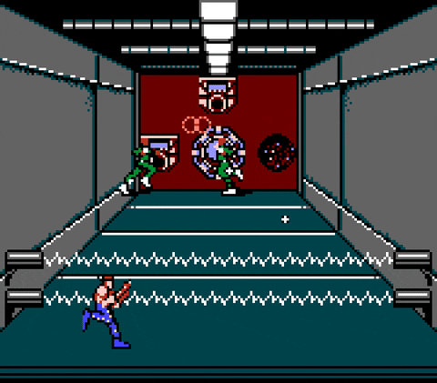
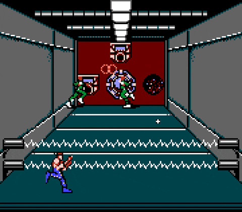

Mario video oyun tasarımcısı Shigeru Miyamoto tarafından yaratılan ve Nintendo'nun çıkardığı Mario oyun serisinin ana karakteri olan hayali karakterdir. Donkey Kong'dan günümüze kadar 200'den fazla video oyununda yer almıştır. Super Mario Japon video oyun tasarımcısı Shigeru Miyamoto tarafından üretilen, İngilizce konuşabilen, dış görünüşüyle Meksikalı'ya benzeyen İtalyan tesisatçıdır.
Pac-Man'de oyuncu, bir labirent içerisinde hareket ederek sarı diskleri bitirmeye çalışır. Hedefi hayalet ve canavarlardan kaçarak tüm küçük diskleri toplamak olan oyuncu, tüm diskleri topladığında diğer aşamaya geçer. Labirent üzerinde beliren meyveleri toplamak oyuncuya fazladan puan kazandırır. Büyük sarı diskleri aldığında, canavar ve hayaletler maviye dönüşür ve bir süreliğine yenilebilir duruma gelirler. Oyunun Atari 2600 kartuşları Türkiye'de Dobişko adıyla piyasa sürülmüştür.Oyun Japonya'da Puck-Man olarak yayımlanmış olsa da; bazı vandalların "P" harfini "F" ile değiştirerek küfür oluşturması nedeniyle oyun Amerika'da Pac-Man olarak yayımlandı. Google 21 Mayıs 2010'da Pac-man'in 30. yılı olması nedeniyle bir jest yaparak logosunda Pac-Man oynamıştır. Pac-Man oyunu'nun başka sürümleri de vardır. Ayrıca 2010 ve 2015 yıllarında 2 ayrı film olan Pixels(film 2015) ve Pixels(film 2010) filmlerine de konu olmuştur.
Donkey Kong, Mario karakteridir. İlk olarak kötü karakter olarak çıkan bir gorildir. Türkçesi "Eşek Kong"'tur. Jumpman isimli düşmanı sonradan Mario olarak kendi serisine çıkınca bir süre sonra onun da serisi çıkartılır ve yeni bir görünüm kazanır. Eski sıradan goril yerine, kaslı ve kravatında DK yazan bir goril olmuştur. SNES'in çıkmasıyla beraber Donkey Kong Country ile çıkış yapmıştır. Şu an en yaşlı oyun karakterlerinin arasındadır. İlk olarak 1981'de çıkmıştır.Donkey Kong, Mario karakteridir. İlk olarak kötü karakter olarak çıkan bir gorildir. Türkçesi "Eşek Kong"'tur. Jumpman isimli düşmanı sonradan Mario olarak kendi serisine çıkınca bir süre sonra onun da serisi çıkartılır ve yeni bir görünüm kazanır. Eski sıradan goril yerine, kaslı ve kravatında DK yazan bir goril olmuştur. SNES'in çıkmasıyla beraber Donkey Kong Country ile çıkış yapmıştır. Şu an en yaşlı oyun karakterlerinin arasındadır. İlk olarak 1981'de çıkmıştır.
yılında Konami tarafından geliştirilen shoot 'em up arcade oyunudur.[3] Başlangıçta arcade olarak üretilse de 1988'de Nintendo Entertainment System için MSX2 de dahil olmak üzere çeşitli diğer konsollara da yayımlandı.[1][2] Oyun, 1980'lerin aksiyon filmlerinden esinlenmiş olup ana karakterleri Arnold Schwarzenegger ve Sylvester Stallone'u andırmaktadır. Orijinal oyunun başarısının ardından birkaç devam oyunu daha üretildi

 
